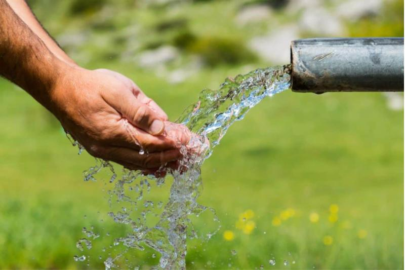
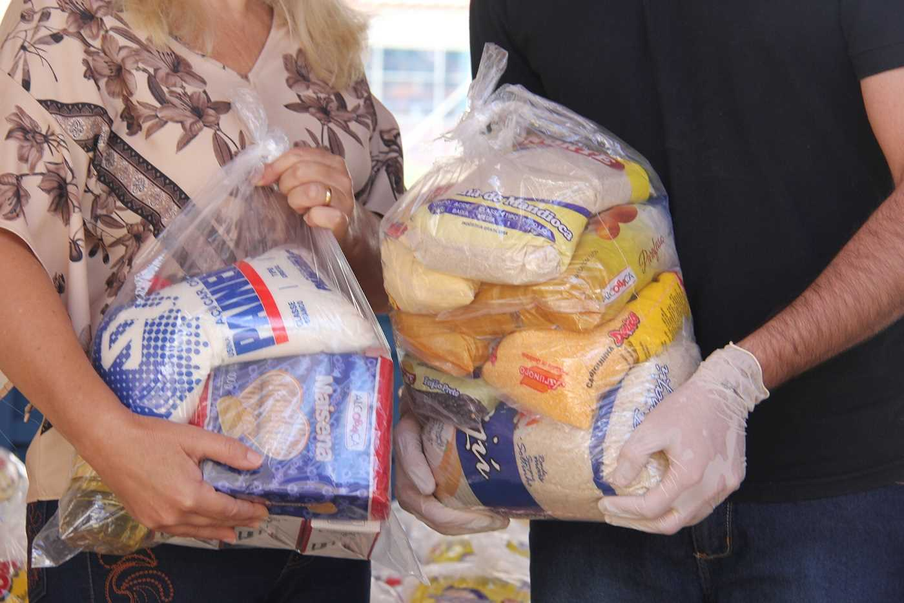

Nossos Projetos
💧 Projeto Água para Todos

A falta de água potável é um dos maiores desafios enfrentados pelas famílias do sertão. O projeto Água para Todos tem como objetivo levar acesso à água limpa e de qualidade através da construção de cisternas, poços artesianos e sistemas de captação de chuva.
Mais do que oferecer um recurso essencial, queremos devolver dignidade e esperança a quem sofre com a seca. Cada gota faz a diferença — e juntos, podemos transformar o deserto em vida.
🍞 Projeto Fome Aqui Não

A fome ainda é uma dura realidade em muitas comunidades do interior. O projeto Fome Aqui Não busca garantir que nenhuma mesa fique vazia. Por meio da distribuição de cestas básicas, alimentos frescos e programas de apoio nutricional, levamos sustento e acolhimento às famílias em situação de vulnerabilidade.
Acreditamos que ninguém deve lutar sozinho para sobreviver. Alimentar é também um ato de amor.
📚 Projeto Conhecimento é a Chave do Futuro

A educação é a ferramenta mais poderosa para quebrar o ciclo da pobreza. O projeto Conhecimento é a Chave do Futuro promove o acesso à educação de qualidade por meio de aulas de reforço escolar, doação de materiais, cursos profissionalizantes e incentivo à leitura.
Cada criança e jovem alcançado representa uma nova esperança para o sertão — porque quando o conhecimento chega, o futuro se abre.